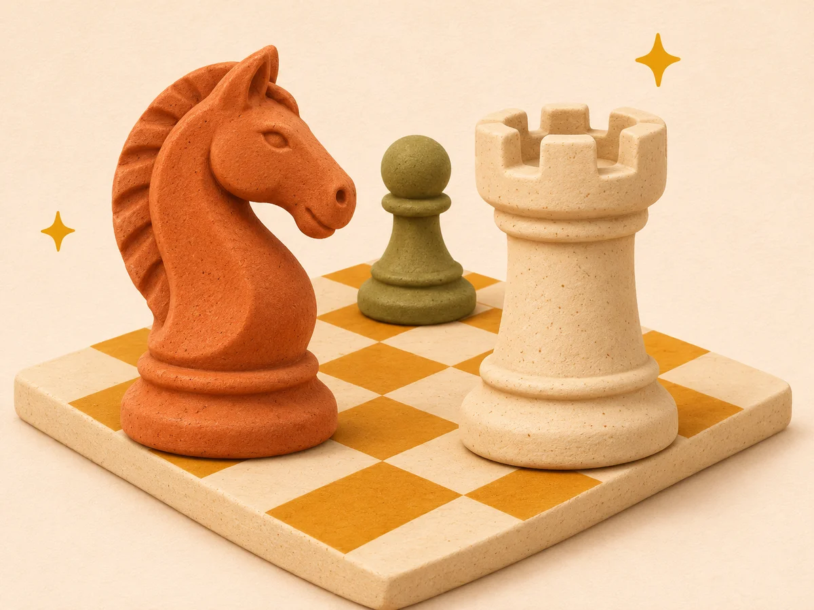

El tablero
Tiene 8 filas y 8 columnas. Cada casilla tiene un nombre que empieza por la letra de su columna. Por ejemplo, e4 está en la columna e y la fila 4.
Practicar coordenadasTu aula de ajedrez
Aprende a mover las piezas, supera un reto y descubre tu próxima jugada.

Elige un juego y supera cinco rondas. Puedes volver a intentarlo tantas veces como quieras.
Toca una casilla o usa las flechas y pulsa Intro.
Explora el tablero y conoce las seis piezas del ajedrez.
0 de 3 lecciones completadas
Tu avance se guarda en este navegador.
El navegador no pudo guardar tu avance. Puedes seguir hasta que cierres esta página.
Insignia «Primeros pasos» conseguida
Tiene 8 filas y 8 columnas. Cada casilla tiene un nombre que empieza por la letra de su columna. Por ejemplo, e4 está en la columna e y la fila 4.
Practicar coordenadasSe mueve en L. Cuenta dos casillas en línea recta y luego una hacia un lado. Puede saltar por encima de otras piezas.
Practicar con el caballoSe mueve por una sola fila o columna. Puede recorrer varias casillas seguidas si el camino está libre.
Practicar con la torreReto de la semana
Coloca un caballo en d4 de un tablero vacío. En parejas, buscad todas las casillas a las que puede llegar en un solo salto.
Hay ocho saltos posibles. Puede llegar a b3, b5, c2, c6, e2, e6, f3 y f5.
Descarga y descomprime la carpeta. Abre INICIO.html con tu navegador. Los juegos funcionan sin conexión y el archivo incluye una guía para empezar.
Descargar el aula (ZIP)Empieza con un encuentro amistoso. La liga y la gestión de torneos se incorporarán en la fase 5.
Pendiente · Fase 2
Podrás elegir entre cinco niveles y pedir pistas para aprender durante la partida. Mientras tanto, puedes practicar las piezas con los minijuegos.
Ir a los minijuegosEn desarrollo · Fase 4
Ya se probó una primera versión de las salas privadas por código. Antes de abrir los retos al alumnado, el colegio revisará el acceso y las opciones de privacidad.
Pendiente · Fase 4
Cuando el centro habilite este modo, podrás buscar partida entre el alumnado autorizado. El juego intentará encontrar a alguien de un nivel parecido al tuyo.
Pendiente · Fase 3
Tu perfil reunirá el avatar, el progreso en la academia y las insignias. El profesorado gestionará el acceso cuando el centro lo autorice.
Pendiente · Fase 3
Podrás conseguir artículos decorativos con las Monedas de Jaque que ganes al aprender y participar.